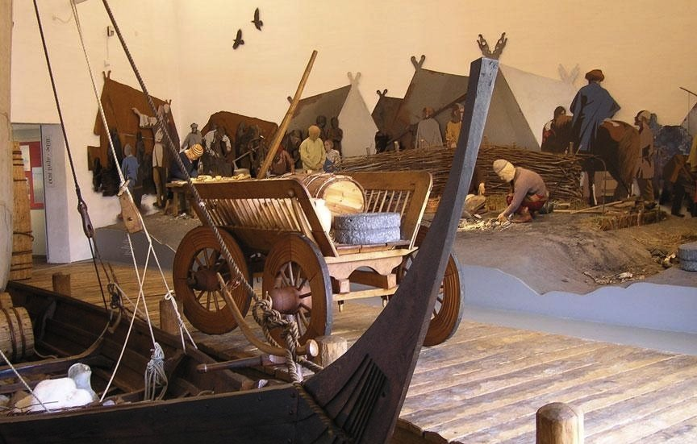

Епоха вікінгів
Епоха вікінгів
 Торгівля
Торгівля
Панування у VIII-му та IX-му століттях у торгівлі євреїв (Середземномор'я та Схід) та фризів (у Європі) змінюється широкою торговою мережею вікінгів. Товарообмін відбувається морем та річками (перетягування човнів через невеличкі ділянки суходолу волоком).
Завдяки опановуванню руських торгових шляхів (Дніпром до Візантії, Волгою до арабського світу) світова торгівля переміщується до Швеції (шведський торговельний центр Бірка), а з 900 року — до Хайтхабу (Хедебю), що засновуються з метою панування над транзитним шляхом між південним сходом і заходом та для скорочення шляху. Більше значення, ніж торгівля з греками, має торгівля з арабами (срібло із Західного Туркестану й Афганістану: знахідка 40000 арабських срібних монет на Готланді).
Вікінги поставляють хутро, рабів (з балтійських, слов'янських і фінських земель) і прикраси з дорогоцінних металів. Торгівля вікінгів занепадає близько 1050 року. Срібло гарцьких копалень замінюється арабським срібним потоком (срібні копальні в східному халіфаті вичерпуються).
- 